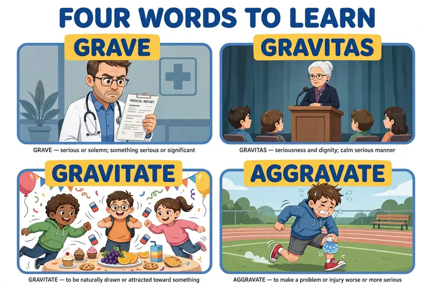
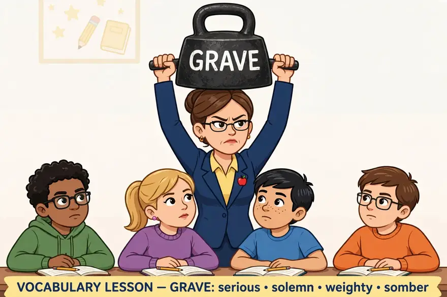
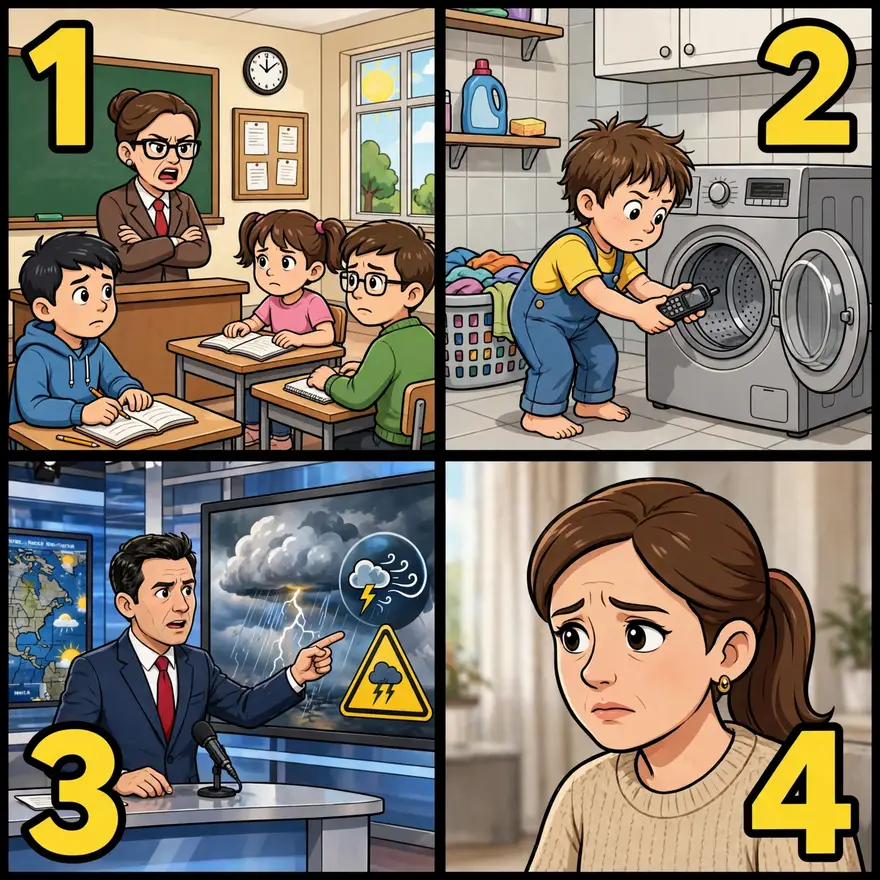
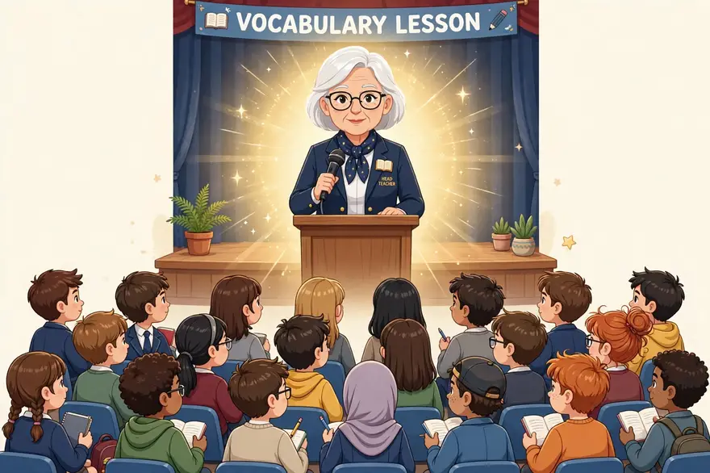
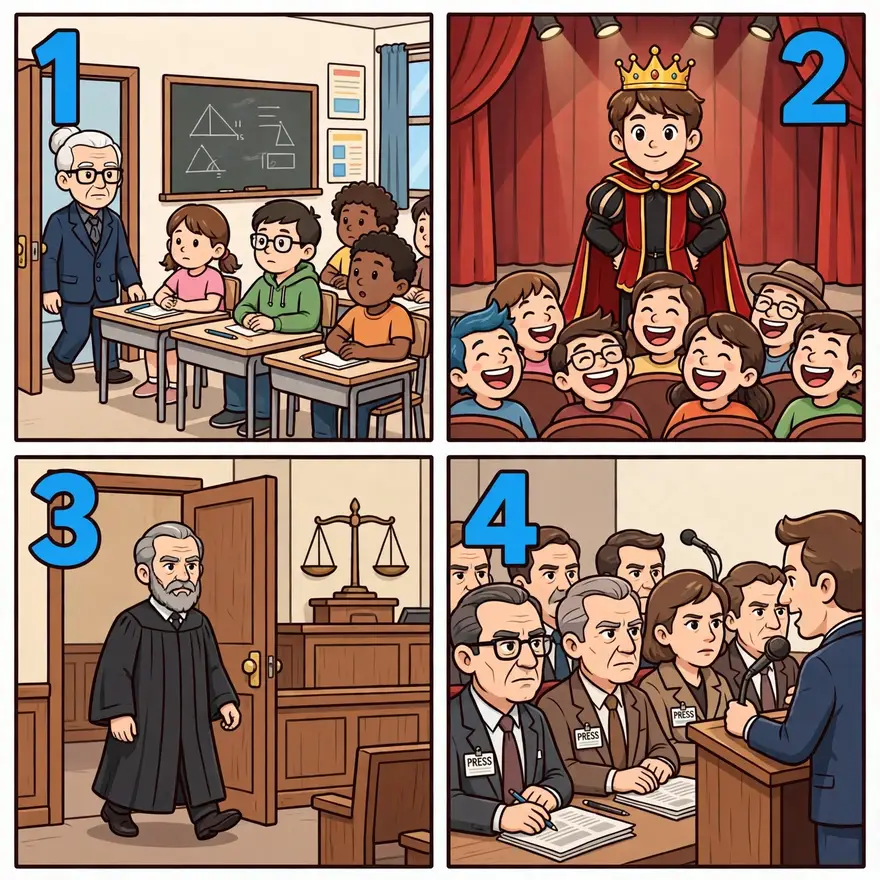
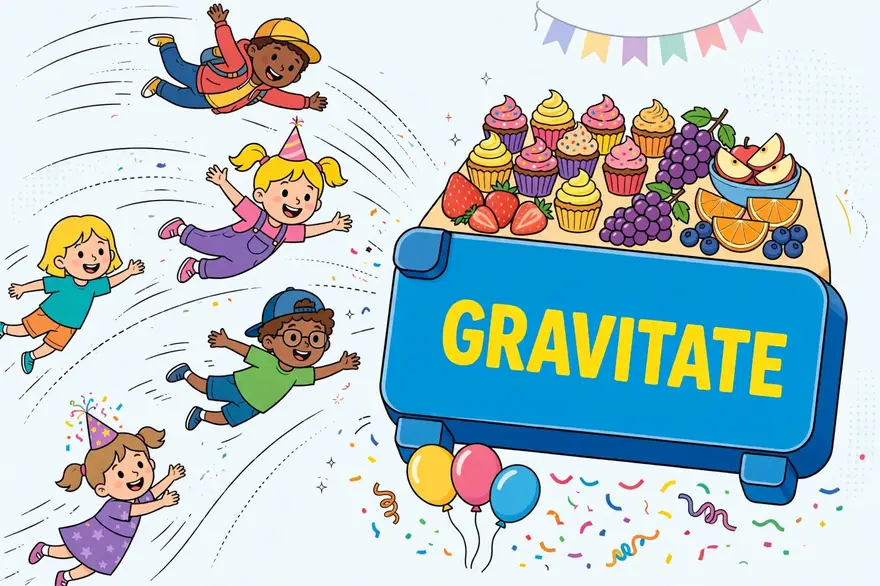
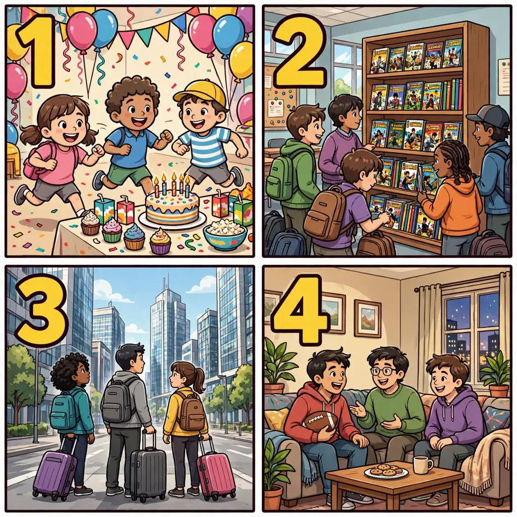
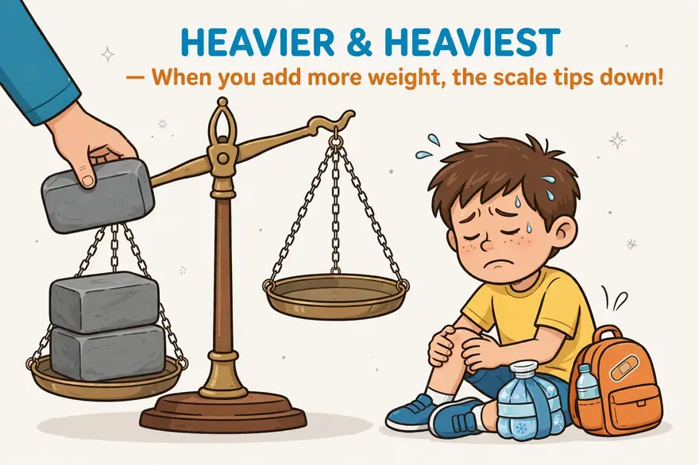
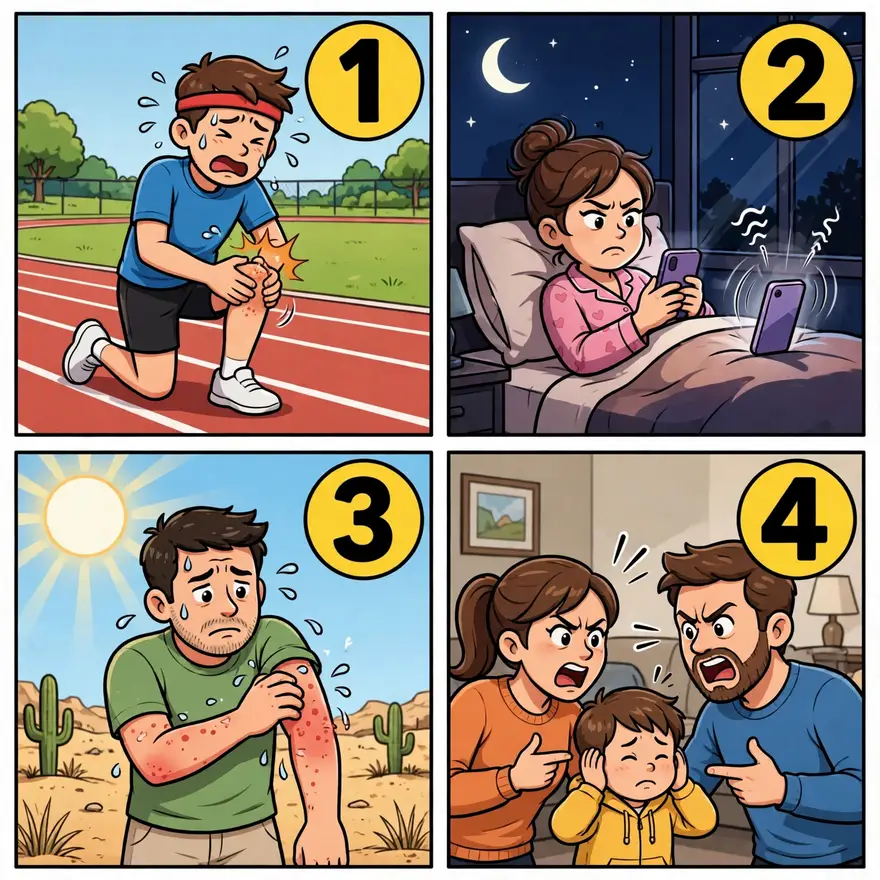
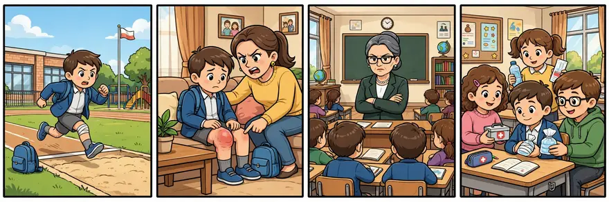

点开单元看词根；带链接的是已上线词根，其余陆续制作中。
词汇课首页 › Unit 1 › GRAV
🔊 词根发音：/ɡræv/（和 grave「严重的」开头读法一样——GRAV 就是「重」本身；它来自拉丁语 gravis「重的、严肃的」）
This morning, our school sports day began with a grave announcement: the rain had turned the running track into a swimming pool. Our head teacher, a woman with real gravitas, stepped onto the stage and said, “No running today — but the tug-of-war goes on.” Within minutes, the whole school gravitated toward the tug-of-war rope, cheering so loudly that the head teacher had to cover her ears. And our class star runner? He had hurt his knee last week, and jumping up and down on the sideline only aggravated the injury — the school nurse sent him straight to the bench with an ice pack.
本则为自创热点段子：词是真的，事是编的——grave、gravitas、gravitate、aggravate 四个词一个不少，全在里面。真实新闻里也有同样的 aggravate：11 月 13 日，《与星共舞》选手 Maura Higgins 肋骨受伤后仍坚持排练，媒体担心她会加重伤势（Soap Opera Spy 2026-11-13，援引《爱尔兰星报》）。
GRAV comes from the Latin word meaning “heavy, weighty, serious.” Gravity is, of course, what makes things heavy, and without it there wouldn’t be any life on earth, since nothing would stay on earth at all. This doesn’t stop us from yelling in outrage when the familiar laws of gravity cause something to drop to the floor and break.
GRAV 一家全和「重」有关，但分工清楚：grave 是事情本身很「重」（严峻），gravitas 是人身上那份「重」（威严、分量），gravitate 是被「重」吸过去（不由自主地靠拢），aggravate 是往「重」上再加「重」（加重、惹恼）。

在图片中，画面分成四格：左上，医生神情严肃地拿着一份写有 MEDICAL REPORT 的病历，对应 grave（严重的）；右上，白发老校长站在讲台上，台下学生安静地听着，对应 gravitas（威严）；左下，派对上三个孩子笑着扑向摆满纸杯蛋糕和水果的零食桌，对应 gravitate（被吸引过去）；右下，一位膝盖敷着冰袋的男生在跑道上疼得龇牙咧嘴，对应 aggravate（加重伤势）。
(1) Requiring serious thought or concern. (2) Serious and formal in appearance or manner.
• We realized that the situation was grave and that the slightest incident could spark all-out war.
Gravity has a familiar physical meaning but also a nonphysical meaning—basically “seriousness.” Thus, something grave possesses gravity. You can refer to the gravity of a person's manner, though public figures today seem to have a lot less gravity than they used to have. Or you can talk about a grave situation, as in the example sentence. But even though Shakespeare makes a pun on grave when a dying character talks about being buried the next day (“Ask for me tomorrow and you shall find me a grave man”), the word meaning “hole for burying a body” isn't actually related.
（1）需要认真思考或关注的；严重的。(2) 严肃而正式的（指外表或举止）。
例句：我们意识到局势很严重，稍有风吹草动就可能引发全面战争。
gravity 有一个常见的物理义项，还有一个非物理义项——基本上就是「严肃」。所以，grave 的东西就具有 gravity（庄重）。你可以说一个人的举止很有 gravity（庄重），不过如今的公众人物似乎比从前少了许多这份庄重。你也可以说 a grave situation（严峻的局势），就像例句那样。但即使莎士比亚让一个临死的角色拿 grave 开双关——说自己明天就要被埋葬（「Ask for me tomorrow and you shall find me a grave man」，「明天来找我，你会发现我是个严肃的人／一个躺进坟墓的人」）——那个表示「埋葬尸体的坑」的词，实际上和它并没有关系。
—— 下面是我的讲解 ——
🧠 记忆妙招：grave 的「严肃」来自「重」——事情一「重」，全场就得绷住脸。画面就是记忆图：老师把写着 GRAVE 的大秤砣高高举过头顶，学生们立刻坐得笔直。最要紧的是辨析：形容词 grave（严肃）和名词 grave（坟墓）拼写一模一样，却是两条血统——形容词从拉丁语 gravis「重的」坐船进口，Merriam-Webster 标注首用 1539 年；名词是古英语 græf「挖」土生土长，坟墓是「挖出来的坑」。自创口诀（非民间流传）：一个进口、一个土产，拼写在机场撞上了。原书讲解段的莎士比亚双关是现成证据：《罗密欧与朱丽叶》里将死的墨丘西奥说 "Ask for me tomorrow and you shall find me a grave man"——既是「严肃的人」，也是「躺进坟墓的人」。音乐课还能串：贝多芬《悲怆》第一乐章的慢板引子就标记为 grave（very slow），「慢而庄重」正是这个词的味道。习语也全是名词义：have one foot in the grave（一只脚已踏进坟墓）、turn in one's grave（气得在坟墓里翻身，1888 年首记）。

💡 场合与语境：新闻里说局势、病情、错误「严重」时最常见（a grave situation / a grave mistake / grave consequences）；形容人时指「表情严肃、态度郑重」（a grave expression）。
🔁 高级替换：议论文写「形势严峻」，grave 比 serious 更有分量；写「后果严重」用 grave consequences，比 bad results 高级得多。
⚠️ 注意：它只讲「分量重」，不讲「可怕」——grave situation 是严峻的局势，不是恐怖的局势；它还有「（声音）低沉的」和「钝音符」（grave accent，如法语 è）两个小义项，讲课别只讲两个义项就说「全部义项」；千万别说「grave 严肃是因为和坟墓有关」——严肃义来自「重 → 有分量」，与埋人无关。
写作：议论文写「形势严峻」用 a grave situation / a grave mistake / grave consequences，比 serious 更有分量；写人「神情凝重」用 a grave expression。
✏️ 拼写：g-r-a-v-e；注意它和名词 grave「坟墓」拼写完全一样，意思却不同源——读文章时看上下文定意思。
例句：

图片四格与下面 ①②③④ 四个例句一一对应。
① The head teacher looked very grave when she told us about the fire drill.
班主任说起消防演习时，神情非常严肃。
② My little one made a grave mistake — he put my phone in the washing machine.
我家娃犯了个严重的错误——他把我的手机放进了洗衣机。
③ The news brought grave warnings about the coming storm.
新闻发布了关于即将到来的暴风雨的严峻警告。
④ She listened to the results with a grave face.
她神情凝重地听着考试结果。
Great or very dignified seriousness.
• The head of the committee never failed to carry herself with the gravitas she felt was appropriate to her office.
This word comes to us straight from Latin. Among the Romans, gravitas was thought to be essential to the character and functions of any adult (male) in authority. Even the head of a household or a low-level official would strive for this important quality. We use gravitas today to identify the same solemn dignity in men and women, but it seems to come easier in those who are over 60, slow-moving—and a bit overweight.
极大的、非常庄重的严肃；威严。
例句：委员会主席总是不失她认为与职务相称的那份庄重。
这个词直接来自拉丁语。在罗马人看来，gravitas 是任何处于权威地位的成年（男性）品格与职责中不可或缺的东西。即使是一家之主或一名低级官员，也会努力追求这一重要品质。今天我们用 gravitas 来指代男女身上同样的庄重尊严，不过它似乎在那些年过 60、行动迟缓——还有点超重——的人身上来得更容易。
—— 下面是我的讲解 ——
🧠 记忆妙招：gravitas 是「自带分量的人」——一开口，全场自动安静，连主持人都恭恭敬敬站一边。画面就是记忆图：白发老校长站在讲台上，身后金光一圈，台下几十个学生鸦雀无声。罗马人把 gravitas 列进 mos maiorum（祖先传统美德），释为「有尊严的自制」；当官的、管家的都得有它，有了它才配得上 dignitas（荣誉与尊重的名声）。反直觉冷知识：这词听着古老，在英语里其实很「年轻」——Merriam-Webster 标注首用 1869 年，19 世纪晚期才借入英语。最著名的 gravitas 事件是 2000 年美国大选：媒体天天说小布什 lack gravitas（缺分量），切尼就是被选来「补分量」的；专栏作家 Thomas Sowell 2000 年 8 月 1 日专门写了《The "gravitas" game》，吐槽政客和媒体人像鹦鹉一样天天重复这个词。2006 年评论主播 Katie Couric 时，同行 Judy Woodruff 说它是「一个被到处乱扔的流行词，没人确切知道它是什么意思」。记住：gravitas 最终会 sink of its own weight（沉于自身的重量）——语言博客 Grammarphobia 的双关玩笑。

💡 场合与语境：政治评论、新闻里评价领导人、主播、法官「有没有分量」；日常口语几乎不用，对朋友说 "You have gravitas" 会像在颁奖。
🔁 高级替换：评价人物、领导风格，have / lack / bring / lend gravitas (to sth) 是现成句式；a leader with real gravitas 比 a serious leader 更有分量。
⚠️ 注意：它是不可数名词，别说 *a gravitas*；说某人 lack gravitas 在英美语境是相当刻薄的政治评价（暗指「轻浮、上不了台面」），造句时提醒学生语气分量；别把它说成「古英语词」——它是拉丁语词，19 世纪晚期才借入英语。
写作：评价人物、领导风格时，have / lack / bring gravitas 是高级句式；a leader with real gravitas 比 a serious leader 更有分量。
✏️ 拼写：grav-i-tas；重音在第一个音节；它是不可数名词，别说 a gravitas。
例句：

图片四格与下面 ①②③④ 四个例句一一对应。
① Our old head teacher has real gravitas — when she walks into the room, everyone goes quiet.
我们那位老班主任真有威严——她一走进教室，所有人立刻安静下来。
② The young actor played the king without any gravitas, and the audience just laughed.
那位年轻演员演国王一点威严都没有，观众只觉得好笑。
③ The judge entered the courtroom with quiet gravitas.
法官带着沉静的威严走进法庭。
④ His gravitas made even his critics listen.
他的威严连批评者都认真听他说话。
To move or be drawn toward something, especially by natural tendency or as if by an invisible force.
• On hot evenings, the town's social life gravitated toward the lakefront, where you could stroll the long piers eating ice cream or dance at the old Casino.
To gravitate is to respond, almost unconsciously, to a force that works like gravity to draw things steadily to it as if by their own weight. Thus, young people gravitate toward a role model, moths gravitate to a flame, a conversation might gravitate toward politics, and everyone at a party often gravitates to the bar.
（尤指凭自然倾向、仿佛被一股看不见的力量牵引着）向某处移动或被吸引过去。
例句：炎热的傍晚，小镇的社交生活都向湖边聚拢，在那里可以沿着长长的码头散步吃冰淇淋，或者去老赌场跳舞。
gravitate 就是对一股像引力一样起作用的力量作出反应——几乎是无意识地、被它稳稳地吸引过去，仿佛凭自身的重量一般。所以，年轻人会 gravitate toward 一位榜样，飞蛾会 gravitate to 火焰，一场谈话可能会 gravitate toward 政治，而派对上的人常常 gravitate to 吧台。
—— 下面是我的讲解 ——
🧠 记忆妙招：gravitate 就是「人版的万有引力」——不是被人推过去，是自己不由自主地「飘」过去。画面就是记忆图：派对上，孩子们像铁屑一样被一块写着 GRAVITATE 的大磁铁吸向零食桌。时间线对得上牛顿：牛顿《自然哲学的数学原理》1687 年出版，gravitate 在 1692 年进入英语记录，正是引力话语扩散的年代——但注意，Merriam-Webster 没有说这个词是牛顿本人造的，别把功劳安在他头上。更有意思的是老大哥 gravity：它 1509 年就进了英语，比牛顿早得多，且最初义项是「举止的庄重」——早在牛顿头上（据称）砸下苹果的 150 多年前，gravity 已经是个词了，Merriam-Webster 把苹果故事称为 apocryphal（无确证的传说）。Merriam-Webster 的词史介绍还拿《星球大战》开玩笑，说这组 gravis 后代身上都有 "the force"（原力），gravity 负责把我们带回地面「or Tattooine（塔图因）」，还管读者叫 young padawan——词典编辑的正经玩笑，可放心引用。

💡 场合与语境：新闻、散文里写人群、话题、选民「慢慢靠向」某处：The guests gravitated toward the far side of the room. / The conversation gravitated to politics. / Voters have started gravitating to him as a possible candidate.（Merriam-Webster 词条例句）
🔁 高级替换：写「人们自然而然地聚向……」用 gravitate toward/to，比 gather 更有画面感；话题转弯用 The conversation gravitated toward …
⚠️ 注意：它是不及物动词，后面必须跟 to / toward(s)，不能说 *gravitate sth*；主语多为人或人群、话题、资金流向等「缓缓移动」的东西；它比 be attracted to 多一层「自然倾向、不由自主」的味道。
写作：写「人们自然而然地聚向……」用 gravitate toward/to，比 gather 更有画面感；话题转弯用 The conversation gravitated toward …
✏️ 拼写：grav-i-tate；-ate 是动词结尾；它是不及物动词，后面必须跟 to / toward(s)，不能直接接宾语。
例句：

图片四格与下面 ①②③④ 四个例句一一对应。
① At every party, the kids gravitate toward the snack table within five minutes.
每次派对，不出五分钟，孩子们就全都聚到零食桌边去了。
② During break time, my students always gravitate toward the bookshelf with the comics.
课间休息时，我的学生们总是不由自主地聚到放漫画的书架旁。
③ Young people gravitate toward the city for jobs.
年轻人为了找工作纷纷涌向城市。
④ The conversation gravitated toward football.
谈话不知不觉转到了足球上。
(1) To make (an injury, problem, etc.) more serious or severe. (2) To annoy or bother.
• She went back to the soccer team before the knee was completely healed, which naturally aggravated the injury.
Since the grav- root means basically “weighty or serious,” the original meaning of aggravate was “to make more serious.” A bad relationship with your parents can be aggravated by marrying someone who nobody likes, for example, or a touchy trade relationship between two countries can be aggravated by their inability to agree on climate-change issues. Depression can be aggravated by insomnia—and insomnia can be aggravated by depression. But when most people use aggravate today, they employ its “annoy” sense, as in “What really aggravates my dad is having to listen to that TV all day long.”
（1）使（伤情、问题等）更严重、更恶化。(2) 惹恼、烦扰。
例句：她的膝盖还没完全康复就回了足球队，这自然加重了伤势。
因为 grav- 词根的基本意思是「重的、严重的」，所以 aggravate 最初的意思就是「使更严重」。比如，和父母本来就糟的关系，会因为你娶／嫁了一个谁都不喜欢的人而变得更糟；两国之间本来就敏感的贸易关系，也会因为双方在气候变化问题上谈不拢而恶化。抑郁会因失眠而加重，失眠也会因抑郁而加重。但如今大多数人使用 aggravate 时，用的是它的「惹恼」义，比如：「What really aggravates my dad is having to listen to that TV all day long.」（真正让我爸恼火的，是整天都得听那台电视。）
—— 下面是我的讲解 ——
🧠 记忆妙招：ad-（再加）+ gravāre（使重）= 往已经很重的东西上再加重量。画面就是记忆图：一杆天平，左边托盘上已经压着两块大砖，一只手又往上加第三块，秤砣一下子沉到底；旁边膝盖敷着冰袋的男生疼得直咧嘴——伤更重了、事更糟了、人也被惹毛了，全是这一个画面。法律里这个「加重」义是活化石：aggravated assault（加重袭击罪）指造成严重身体伤害的袭击，比 simple assault 更重；aggravating circumstances（加重情节）量刑往上推，对面是 mitigating circumstances（减轻情节）——grav- 的「往秤上加砝码」画面在法庭上天天上演。争议本身就是笑料：反对「激怒」义的运动约始于 1870 年，Fowler 在 1926 年《现代英语用法词典》里称把 aggravate 用作 annoy「应留给没受过教育的人去用」（注：这是 1926 年的偏见原话，引用须点明时代背景）；Merriam-Webster 反呛：这个义项已用了约 400 年，"we're sure it will be widely accepted any day now"（我们相信它马上就会被广泛接受了——反话）。

💡 场合与语境：医疗新闻、体育报道说「加重伤情」（aggravate an injury）；日常口语说「惹恼」也很常见（"You're aggravating me!"）。
🔁 高级替换：写「使问题恶化」用 aggravate the problem / aggravate the situation；写法律话题，aggravating circumstances（加重情节）是固定搭配。
⚠️ 注意：「激怒」义有争议：词典正式收录，Twain、Dickens、Melville 都用过，American Heritage 用法小组 68% 赞成；但 2015 年版《纽约时报风格手册》仍坚持 aggravate 只表「加重」。实操：口语和非正式写作放心用「惹恼」义；正式考试作文、学术写作中为避争议优先用 annoy / irritate / exasperate，aggravate 留给「加重（病情／局势／罪行）」；法律语境中 aggravated 永远只取「加重」义，aggravated assault 绝不是「令人恼火的袭击」。
写作：写「使问题恶化」用 aggravate the problem / aggravate the situation；写法律话题，aggravating circumstances（加重情节）是固定搭配。
✏️ 拼写：ag-grav-ate；ag- 是 ad- 的变体（ad + gravare）；注意和 alleviate（缓解，LEV 课）是一对反义词——一个加重量，一个卸重量。
例句：

图片四格与下面 ①②③④ 四个例句一一对应。
① Running on a bad knee will only aggravate the injury — rest for a week.
带着坏膝盖跑步只会加重伤势——休息一周吧。
② The 60-second voice messages in the parents’ group chat really aggravate me at midnight.
家长群里半夜的 60 秒语音消息，真的很惹我烦。
③ Hot weather can aggravate his skin problem.
炎热的天气会加重他的皮肤问题。
④ Don't aggravate the situation by arguing in front of the children.
别当着孩子的面吵架，那只会让情况更糟。
期末考试前一周，班里出了件「重」事：小明的膝盖在体育课上扭了，医生说至少歇两周。可他偏不听，偷偷去练跳远——结果伤上加伤，疼得直咧嘴，妈妈气得说：「你这是在 aggravate（加重）伤势，不是在锻炼！」班会课上，班主任神情 grave（严肃）地说：「这件事很严重，谁再带伤训练，就罚抄课文。」她一开口，全班立刻安静——这就是 gravitas（威严）。放学后，大家不约而同地 gravitate（聚）到小明桌边，你一言我一语给他支招：冰敷、抬高腿、按时吃药。小明红着脸说：「我错了，膝盖比面子重。」你看，grave 是事情的重量，gravitas 是人的分量，gravitate 是大家被关心吸到一起，aggravate 是往伤口上再撒一把盐——这一课的四个词，全是「重」。

🌍 英文版：
A week before the final exams, something grave happened in our class: Ming twisted his knee in PE, and the doctor said he needed at least two weeks of rest. But he would not listen — he secretly went to practise the long jump, and only aggravated the injury, wincing with pain. His mum was furious: 'You are aggravating your injury, not training!' At the class meeting, our head teacher said in a grave voice, 'This is serious. Anyone who trains with an injury will copy the text as punishment.' The moment she spoke, the whole class fell silent — that is gravitas. After school, everyone gravitated toward Ming's desk, offering advice: ice it, keep it up, take the medicine on time. Ming blushed and said, 'I was wrong. My knee is heavier than my pride.' You see, grave is the weight of a situation, gravitas is the weight of a person, gravitate is being drawn together by care, and aggravate is adding more weight to a wound — all four words in this lesson are about being 'heavy'.
| 新闻里说局势、病情、错误「严重」 | grave 严重的、严峻的 |
| 政治评论、领导人「有没有分量」 | gravitas 庄重、威严 |
| 人群、话题慢慢靠向某处 | gravitate 被吸引过去 |
| 医疗、体育说「加重伤情」；口语说「惹恼」 | aggravate 加重、惹恼 |
1. The doctor warned him that the situation was — he needed surgery at once.
2. The old head teacher spoke with great ; even the naughtiest boys listened.
3. After school, the students toward the playground to watch the football match.
4. Smoking will only the cough — the doctor told him to stop at once.
5. Don't keep asking him about it — you will only him.
听写（看中文打英文）：
① 严重的、严峻的
② 庄重、威严
③ 被吸引过去、向……靠拢
④ 加重、恶化、惹恼
1. The doctor warned him that the situation was grave — he needed surgery at once.
医生警告他，情况很严重——必须马上手术。
2. The old head teacher spoke with great gravitas; even the naughtiest boys listened.
老班主任说话很有威严，连最调皮的男生都认真听。
3. After school, the students gravitated toward the playground to watch the football match.
放学后，学生们纷纷聚向操场看足球赛。
4. Smoking will only aggravate the cough — the doctor told him to stop at once.
抽烟只会加重咳嗽——医生让他马上戒烟。
5. Don't keep asking him about it — you will only aggravate him.
别一直追问他——你只会惹恼他。
听写：① grave（严重的、严峻的） ② gravitas（庄重、威严） ③ gravitate（被吸引过去、向……靠拢） ④ aggravate（加重、恶化、惹恼）
和精读一样的卡片：正面只有情景，没有答案。先在脑子里搜出那个词、出声说出完整的句子，再点卡片翻到背面对照。每个词两个情景：情景 1 练提取（第 3 步），情景 2 换了个场景练迁移（第 5 步）；翻到背面后如实点记录，记录保存在这台设备上。
体育课上，一位同学摔了一跤，膝盖肿得老高。校医检查完，脸色一下子沉了下来，说必须马上送医院，不能等。
How would you describe the situation?
新闻里说，两个国家的谈判破裂了，边境上气氛紧张，任何一点小事都可能引发冲突。主持人说，形势比上个月严峻得多。
How would you describe the situation between the two countries?
grave /ɡreɪv/ adj. 形容词
严重的、严峻的
🎬 场景范句
情景 1：The situation was grave — the boy needed to go to the hospital at once.
情况很严重——这个男孩必须马上送医院。
情景 2：The situation between the two countries is grave.
两国之间的局势很严峻。
🧭 使用场景
新闻里说局势、病情、错误「严重」时最常见（a grave situation / a grave mistake / grave consequences）；形容人时指「表情严肃、态度郑重」（a grave expression）。
⚠️ 注意
它只讲「分量重」，不讲「可怕」——grave situation 是严峻的局势，不是恐怖的局势；它还有「（声音）低沉的」和「钝音符」（grave accent，如法语 è）两个小义项，讲课别只讲两个义项就说「全部义项」；千万别说「grave 严肃是因为和坟墓有关」——严肃义来自「重 → 有分量」，与埋人无关。
第 3 步 · 提取（情景 1）记录：
第 5 步 · 迁移（情景 2）记录：
注意：这里不是要求你在所有生活场景中强行使用高级词汇，而是让你知道它们在什么情况下才真正适合出现。
第 4 步「表达」：每个词一个开口提示，先别看参考句，出声说一句你自己的真事，再打开参考句对照。
grave：想想一次你神情严肃地跟学生或自家娃谈话的经历，用 grave 说一句。
I gave my students a grave look and told them the test was no joke.
我神情严肃地看着学生们，告诉他们这次考试不是开玩笑。
gravitas：说说你认识的一位「自带威严」的人——校长、老教师、长辈都行，用 gravitas 说一句。
Our head teacher has such gravitas that no one dares to talk in her class.
我们班主任很有威严，没人敢在她的课上说话。
gravitate：说说你和朋友聚会时，大家总会不由自主地聚向哪里——餐桌、烧烤架、麻将桌都行。
At every family dinner, we all gravitate toward the kitchen to watch Mum cook.
每次家庭聚餐，我们都会不由自主地聚向厨房看妈妈做饭。
aggravate：说说生活中一件「越做越糟」的事——比如带伤运动、熬夜赶工，用 aggravate 说一句。
Staying up late only aggravated my cold.
熬夜只会加重我的感冒。